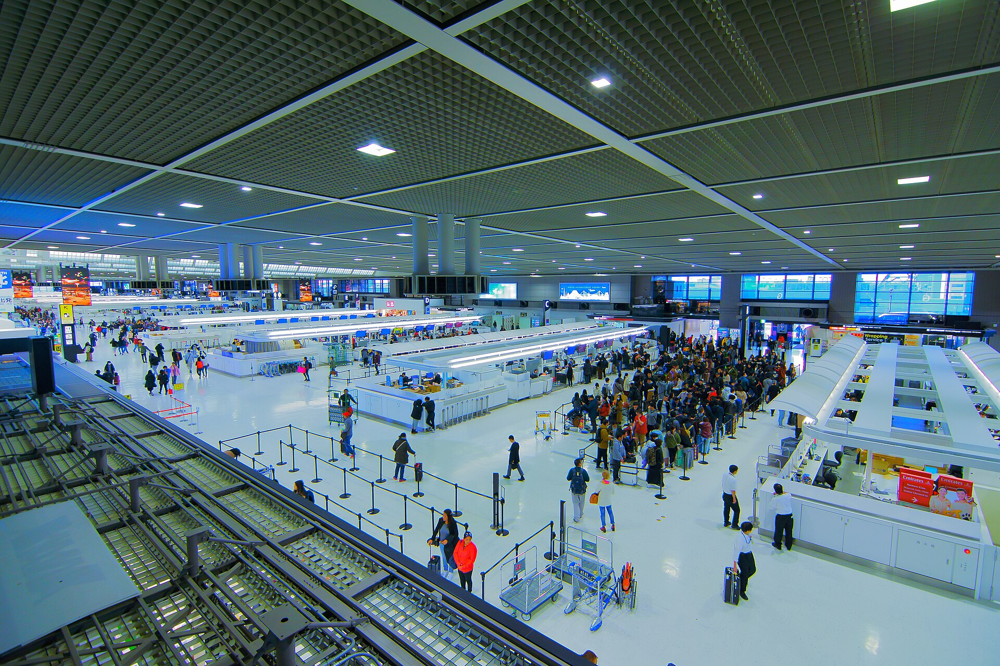

購買時
找有免稅標誌的店家，出示護照等身分文件，確認店家可退款的方式並完成登記。結帳時先支付含稅價格。
記得保留收據與購買紀錄2026 年 11 月 1 日起，日本免稅購物改採「Refund Method」。在免稅店先以含稅價格購買，出境時經海關確認商品確實帶出日本後，再由免稅店或受託退款業者退回相當於消費稅的金額。
以前在店裡就能買到免稅價；新制要先付含稅價，離境時完成海關查核後才退款。不要把退稅商品留在日本、轉交他人或在日本消耗。
找有免稅標誌的店家，出示護照等身分文件，確認店家可退款的方式並完成登記。結帳時先支付含稅價格。
記得保留收據與購買紀錄在購買日起 90 天內離境，於機場安檢前前往海關／免稅手續端末，準備好護照與所有退稅商品接受查核。
商品必須由本人帶出日本海關確認商品帶出後，免稅店或受託退款業者依購買時登記的方式，退回相當於消費稅的金額。
各店家的退款時間與手續費可能不同同一間店、同一天購買金額達未稅 ¥5,000 以上。
商品須由本人在離境時攜帶出境，且數量以個人可攜出為限。
食品、飲料、化妝品等若在日本消耗，海關確認後將無法退款。
金、白金地金等，以及原本不課消費稅的物品不適用。
把退稅商品、護照、收據集中放在容易取出的地方。海關查核時要能確認商品，若已放進託運行李，請先向機場或航空公司確認流程。

新制的海關確認是在安檢前的公共區域進行，不是在通過安檢後才找退稅櫃檯。請預留排隊與查核時間，再前往安檢。
觀光廳列出的主要機場
上述主要機場的國際線出境大廳，在指定專用 Wi-Fi 區域內可用 Visit Japan Web（VJW）進行線上手續；實際動線依機場現場指示為準。
可以整理，但海關查核時必須能出示所有退稅商品。若要託運，請先確認航空公司與機場的現場動線，避免行李已交運卻無法接受查核。
建議保留。購買紀錄與退款方式由免稅店建立，收據可協助你在查詢或退款異常時與店家核對。
不一定。退款由免稅店或其受託退款業者處理，依店家在購買時提供的退款方式與規則為準，購買前先問清楚。